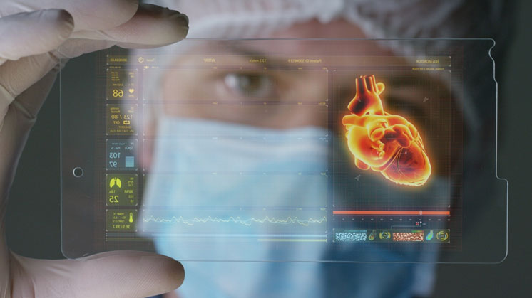

La realidad aumentada (RA) ha emergido como una de las tecnologías más transformadoras del siglo XXI, borrando progresivamente la frontera entre lo digital y lo físico. A diferencia de la realidad virtual que crea entornos completamente inmersivos, la RA superpone información digital al mundo real, enriqueciendo nuestra percepción y interacción con el entorno. Este ensayo examina los fundamentos tecnológicos de la realidad aumentada, sus aplicaciones actuales, los desafíos que enfrenta y su potencial para redefinir diversos aspectos de la vida cotidiana.



• Precisión espacial: Dificultad en entornos dinámicos
• Consumo energético: Baterías en dispositivos wearables
• Latencia: Retrasos en la superposición de objetos